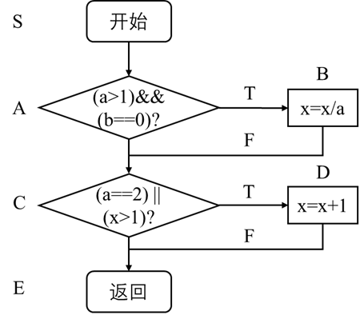
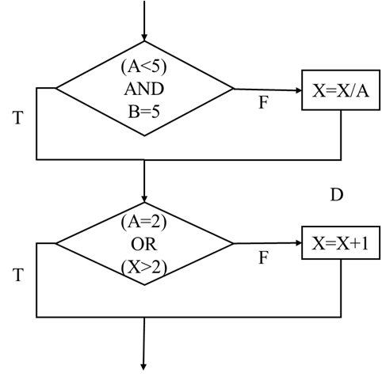
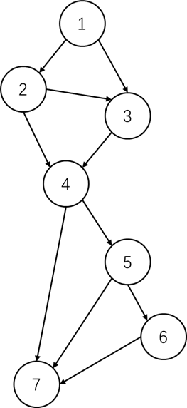

白盒测试
[TOC]
概述
白盒测试法，又称为结构测试或逻辑驱动测试，前提是测试者完全知道程序的结构和处理算法，这种方法按照程序内部的逻辑测试程序，检测程序中的主要执行通路是否都能按照预定要求工作。
主要对程序模块进行以下检查：
- 对程序模块的所有独立的执行路径至少测试一次；
- 对所有逻辑判定取“真”与取“假”的两种情况都至少测试一次；
- 在循环的边界和运行界限内执行循环体；
- 测试内部数据结构的有效性。
白盒测试的特点是依据软件设计说明书进行测试、对程序内部细节的严密检验、针对特定条件设计测试用例，对软件的逻辑路径进行覆盖测试。
白盒测试法可以分为静态方法和动态方法：
静态分析是一种不通过执行程序而进行测试的技术。关键功能是检查软件的表示和描述是否一致、没有冲突或歧义，是任何进一步测试执行的前提。
静态方法可以借助辅助工具自动执行，比如数据流分析器、语法分析器。
软件检视是静态方法的重要手工技术。
动态分析主要特点是当软件系统在模拟的或真实的环境中执行之前、之中、之后对软件系统行为的分析。
最重要的技术是路径测试和分支测试。
控制流测试
程序的结构主要有 3 种，即顺序结构、分支结构和循环结构。
其中，顺序结构的测试比较简单，只需构造合适的测试用例使得程序的每条语句都执行一遍即可。
分支结构和循环结构由于路径和循环次数比较多，测试较复杂。
逻辑驱动覆盖包括分支结构的测试和循环结构的测试，分支测试又包括语句覆盖、分支覆盖、条件覆盖、分支—条件覆盖、条件组合覆盖及路径覆盖。
【例题】
以 C++ 语言程序为例，算法流程如下图。

1 |
|
语句覆盖
语句覆盖是在测试时首先设计若干个测试用例，然后运行被测程序，使程序中的每个可执行语句至少执行一次。
对于上面的程序片段：
CASE1：(A=2,B=0,X=2) 可以做到语句覆盖；
CASE2：(A=2,B=1,X=3) 显然没有达到语句覆盖。
语句覆盖可以保证程序中的每个语句都得到执行，但发现不了判定中逻辑运算的错误，可以说是最弱的逻辑覆盖准则。
判定(分支)覆盖
按判定覆盖准则进行测试指设计若干测试用例，运行被测程序，使得程序中每个判断的取真分支和取假分支至少执行一次。
以上述程序片段为例，可以选用两组测试用例：
CASE3：(A=2,B=0,X=3)
CASE4：(A=1,B=0,X=1)
但是如果将 X>1 错写成 X<1，CASE2 却不影响结果，说明判定覆盖无法确定判断条件的错误。
条件覆盖
条件覆盖指设计测试用例，执行被测程序后，要使每个判断中每个条件的可能取值至少满足一次。
在上述程序段中，第一个判断应考虑 $4$ 种情况：
| 变量 | 表达式的值 | 类别 |
|---|---|---|
| a>1 | 取真值 | 记为 A |
| a>1 | 取假值 | 记为 a |
| b=0 | 取真值 | 记为 B |
| b=0 | 取假值 | 记为 b |
第二个判断应考虑 $4$ 种情况：
| 变量 | 表达式的值 | 类别 |
|---|---|---|
| a=2 | 取真值 | 记为 C |
| a=2 | 取假值 | 记为 c |
| x>1 | 取真值 | 记为 D |
| x>1 | 取假值 | 记为 d |
条件覆盖是否能做到判定覆盖呢？
| 测试用例 | a | b | x | 路径 | 覆盖条件 |
|---|---|---|---|---|---|
| CASE5 | 2 | 1 | 1 | SACDE | AbCd |
| CASE6 | 1 | 0 | 3 | SACDE | aBcD |
上述条件覆盖测试用例并没有覆盖全部 $4$ 个分支，只覆盖了 $2$ 个分支。为解决该问题，需要对条件和分支兼顾，增加测试用例：
| 测试用例 | a | b | x | 路径 | 覆盖条件 |
|---|---|---|---|---|---|
| CASE5 | 2 | 1 | 1 | SACDE | AbCd |
| CASE6 | 1 | 0 | 3 | SACDE | aBcD |
| CASE7 | 2 | 0 | 3 | SABCDE | ABCD |
条件覆盖只能保证每个条件至少有一次为真，而不考虑所有的判定分支。
判定-条件覆盖
判定-条件覆盖要求设计足够的测试用例，使得判断中每个条件的所有可能至少出现一次，并且每个判断本身的判定结果也至少出现一次。
优点是满足判定覆盖准则和和条件覆盖准则，缺点是未考虑条件的组合情况。
路径覆盖
按路径覆盖要求进行测试指设计足够多的测试用例要求覆盖程序中所有可能的路径。
优点是覆盖率高，缺点是有些路径不可能执行到。
循环测试
循环分为 $4$ 种类型，即简单循环、嵌套循环、连锁循环和非结构循环。
对于简单循环，测试应包括以下几种，其中 $n$ 表示循环允许的最大次数。
- 零次循环：从循环入口直接跳到循环出口；
- 一次循环：查找循环初始值方面的错误；
- 二次循环：检查在多次循环时才暴露的错误；
- $m$ 次循环：此时的 $m<n$，同上。
对于嵌套循环，不能将简单循环的测试方法简单地扩大到嵌套循环，因为可能的测试次数将随嵌套层次的增加呈几何级增长。
基本路径测试
基本路径测试法是在程序控制流图的基础上通过分析控制构造的环路复杂性导出基本可执行路径集合，从而设计测试用例的方法，保证程序的每个可执行语句至少执行一次。
程序的控制流图
控制流图是程序流程图的简化，在控制流图中只有两种图形符号：
- 结点：以标有编号的圆圈表示。一个结点包含一个或多个连续的无分支语句，结点不允许含有复合结点。
- 控制流线：以箭头表示。表示程序执行的顺序。
在将程序流程图简化成控制流图时应注意以下几点：
- 在多分支结构中，分支汇聚处应有一个汇聚结点；
- 边和结点圈定的范围叫区域，当对区域计数时，图形外的区域也应记为一个区域；
- 如果判断中的条件表达式是由多个逻辑运算符连接的复合表达式，则需要改为一系列只有单条件的嵌套判断。
举例
程序流程图如下：

第一步：画出控制流图
上图中存在复合表达式，需要分解为简单条件，对应的程序控制流程图如下所示：

第二步：计算环路复杂度
环路复杂度用于计算程序的基本的独立路径数目，为确保所有语句至少执行一次的测试数量的上界。
环路复杂度的计算：
（1）给定流图 G 的环路复杂度 V(G)，定义为 $V(G)=E-N+2$，E 是流图中边的数量，N 是流图中结点的数量；
（2）给定流图 G 的环路复杂度 V(G)，定义为 $V(G)=P+1$，P 是流图 G 中判定结点的数量。
上图的环路复杂度 $V(G)=10-7+2=5$，对应流图中有 $5$ 个区域。
第三步：确定独立路径集合
独立路径是指和其他的独立路径相比至少引入一个新处理语句或一个新判断的程序通路。
V(G) 值正好等于该程序的独立路径数。
- 路径1：1-2-4-7
- 路径2：1-2-3-4-7
- 路径3：1-3-4-7
- 路径4：1-2-4-5-7
- 路径5：1-2-4-5-6-7
注意，独立路径集合不是唯一的。
第四步：准备测试用例
程序插装
一种基本的测试手段。在测试程序中经常采用在程序中设置断点或打印输出语句，在执行过程中了解程序的一些动态特性的方式。如果想要了解程序在某次运行中所有可执行语句被覆盖的情况或者每个语句实际的执行次数，可以在程序的特定部位插入记录动态特性的语句，把运行中的一些重要事件记录下来。
参考资料：
[1] 秦航，杨强 . 软件质量保证与测试(第 2 版)[M] . 北京：清华大学出版社，2017